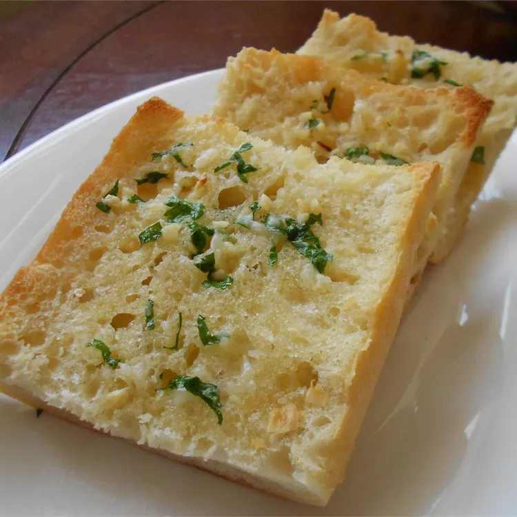

Roasted Garlic Bread

Roasted garlic bread is a delicious side to any Italian pasta dinner.
How to Make Roasted Garlic Bread
Ingredients
- 3 Heads of garlic
- 2 tablespoons of olive oil
- 1 (1 pound) loaf of Italian bread
- 1/2 cup butter, softened
- 2 tablespoons grated parmesan
- 1 tablspoon chopped fresh parsley